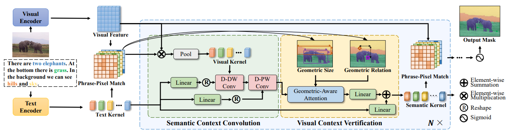
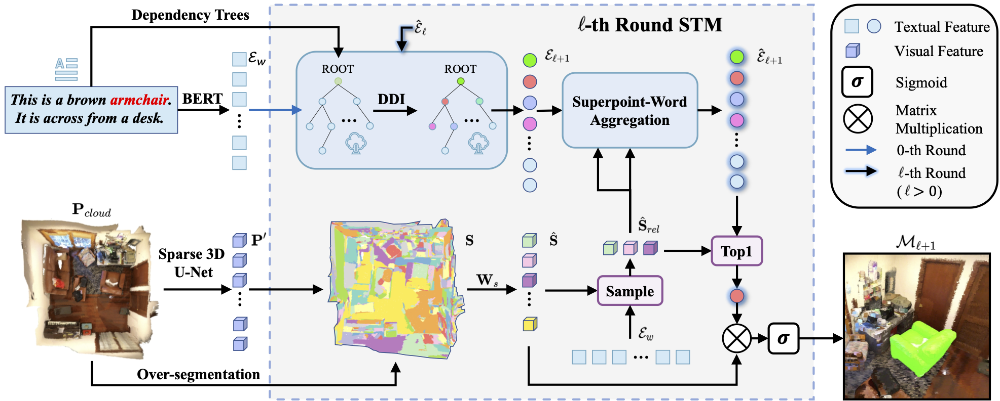
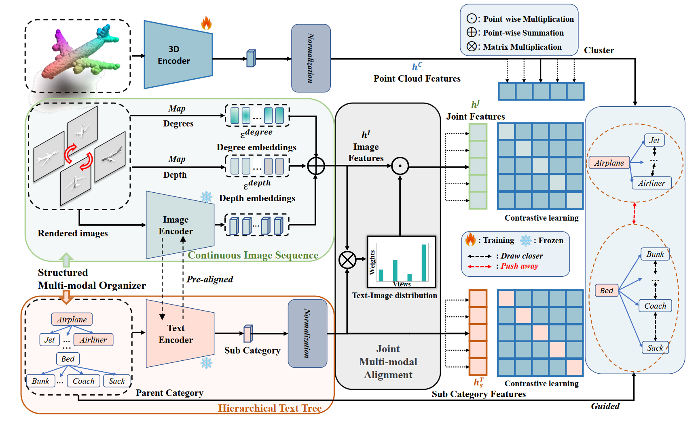
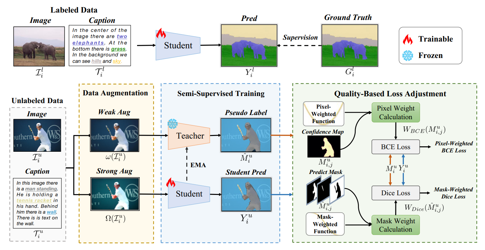
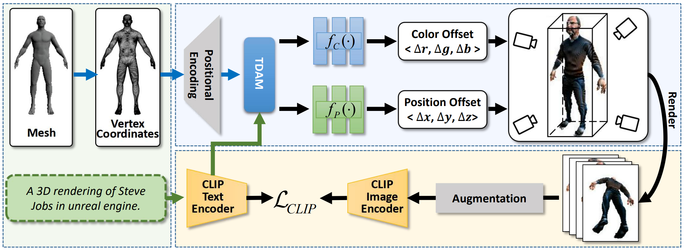
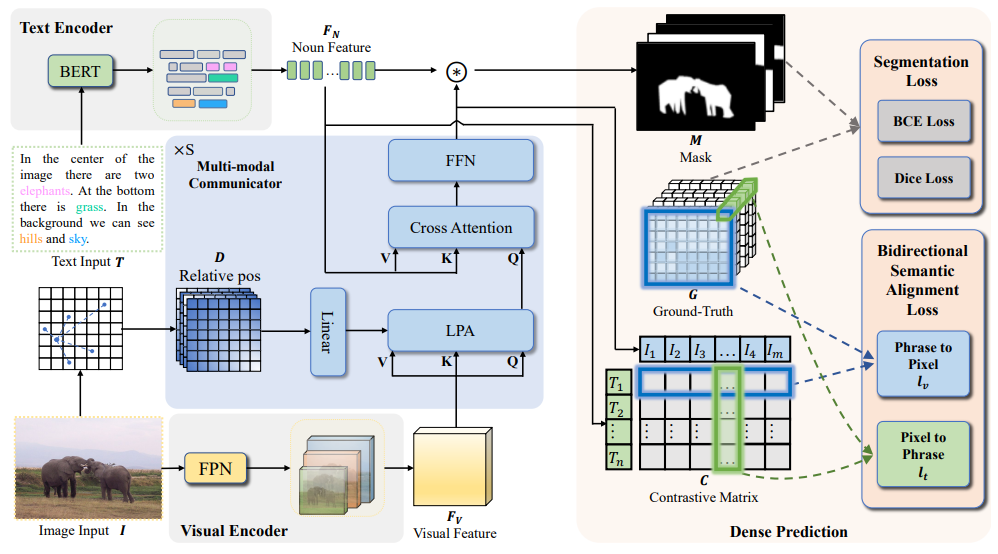
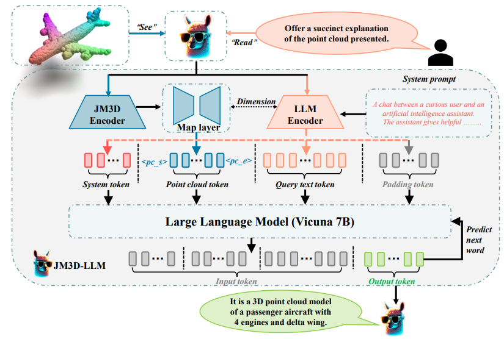

I am currently a third-year postgraduate student in the Department of Artificial Intelligence, School of Informatics, Xiamen University, advised by Prof. Xiaoshuai Sun and Prof. Rongrong Ji.
My recent research interests are in (2D/3D) vision-and-language learning.
- 09/2021 – Now: M.S. in Artificial Intelligence, Xiamen University
- 01/2023 – 07/2023: Multi-modal Research Intern, Netease Fuxi AI Lab
- 09/2017 – 06/2021: B.S. in Intelligent Science and Technology, Xiamen University
Latest News
🔍 I'm looking for a Ph.D. position. If you are interested in my research and can provide full-cover funding, please contact me!
- 12/2023 Two papers accepted by AAAI 2024
- 07/2023 Two papers accepted by ACM MM 2023
- 07/2023 One paper accepted by ICCV 2023
Publications
Conference

Improving Panoptic Narrative Grounding by Harnessing Semantic Relationships and Visual Confirmation
AAAI 2024





Preprint

Major Awards
- 🏅 National Scholarship, China, 2023
- 🎖️ Merit Student of Xiamen University, China, 2023
- 🏆 Outstanding Student Scholarship (Grade 1), Xiamen University, 2018–2020
📊 Visitor Statistics
Total Visits (real-time)
-
Unique Visitors
-
Countries / Regions
🟢 Recent Visitors
Loading real visitor data…
🌍 Your Visit
Detecting your location…